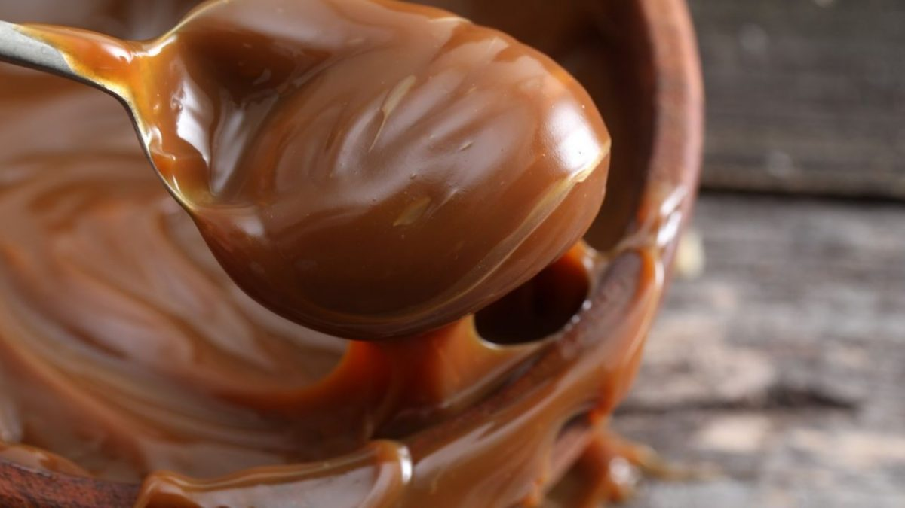

Dulce de Leche

Description
Argentina's neighboring countries claim to be the inventors of this recipe and you may have even heard of it in Mexico named as "Cajeta". Honestly, I don't know who made it but if you do, do me a favour and go tell that man that he is a genius. This is a long recipe, tho. You better have some time in your hands if you think you are deserving of this dream made true.
Ingredients
- Milk.
- Sugar.
- Baking Soda.
- Vanilla extract.
Steps
- Heat up all the ingredients in a cooking pot while mixing constantly with a wooden spoon.
- Once the sugar gets dissolved, lower the fire a bit and keep mixing for 2 hours (told you). If the thing starts to boil, lower the fire and turn it up again once it cools down.
- Once it gets kind of thick, keep mixing constatly so it doesn't get lumpy.
- When you see that it gets a consistency similar to a custard, turn off the heat. Keep mixing until it cools down.
- Once it's cool, save it in jar and keep it in the refrigerator .